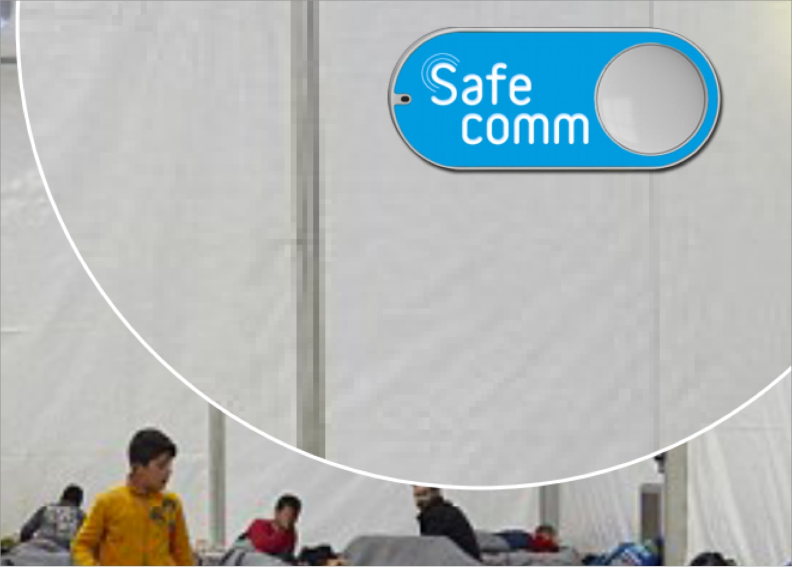
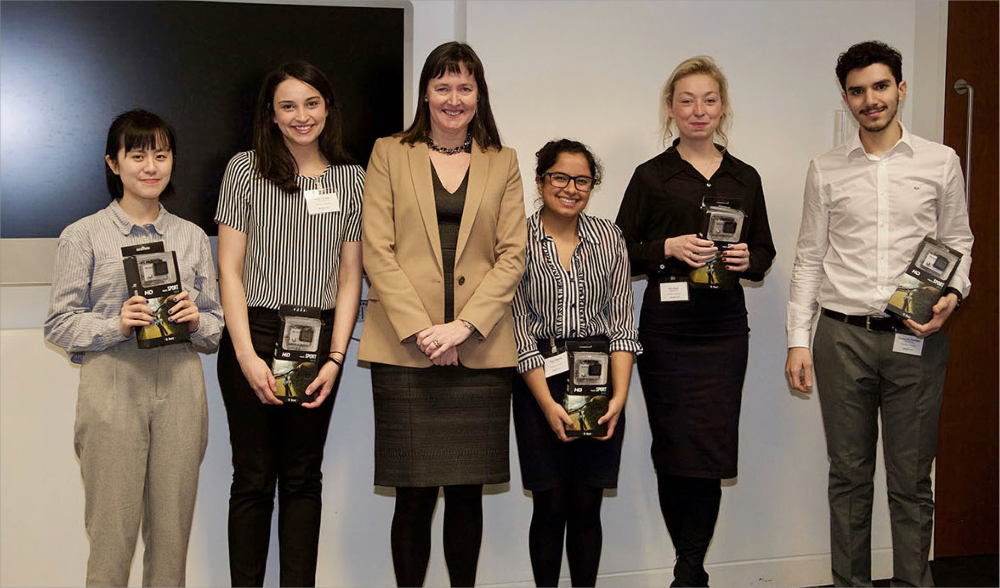

IoT Refugee Camp Security System
Role
Team Captain
Duration
February 2017
Final Deliverables
Prototype
Presentation at Cisco
Cisco's Switch Up Challenge asked teams to tackle a social or environmental issue using IoT technology. Our team chose refugee camp safety — an environment with unreliable infrastructure and real physical risk to the people living there. After submitting our proposal, we were invited to present at Cisco London alongside the other finalists, with both a business case and a working hardware prototype for a feasible camp security system. SafeComm went on to take second place.
The Pitch The OutcomePresenting at the Finals in London meant meeting engineering executives at Cisco London alongside other UK finalists — and leaving with second place. Beyond the placement, the strongest signal was the feedback on feasibility and real-world need, which left the whole team energized to keep building on the concept.
